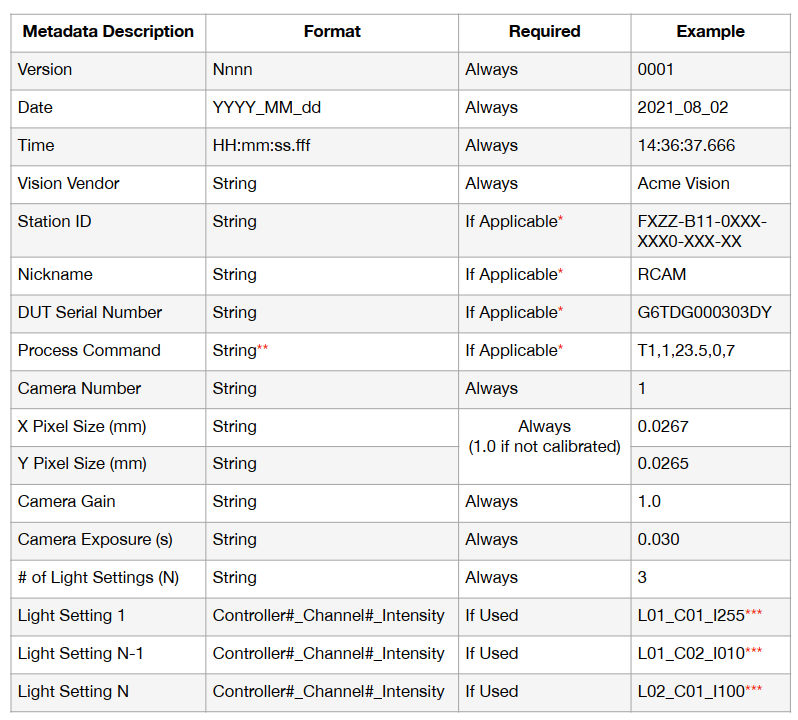
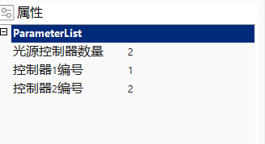
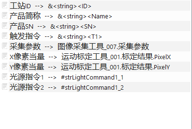
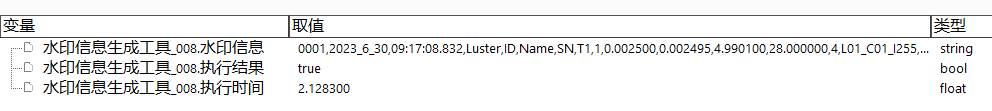

水印信息生成工具主要用户Apple体系中，满足客户对图片增加水印信息的需求。所谓的水印信息，是追加在图片数据之后的一段信息，内容包括了采集这幅图像时使用的一些基础信息，如项目名称、时间、SN、曝光、增益等，后面会有更加详细的介绍。
追加的图片数据之后的水印信息是不可见的，即用户无论使用第三方看图软件，还是使用VA的图像文件工具进行加载，看到的图像信息和原始信息没有任何差异，只有使用特殊的方法才能看到追加的信息，从而保证了图片本身的完整性和正确性。
在Apple体系中比较明显，用户经常会要求我们将图片的基础信息和图片关联起来，而我们通常使用的手段是将这些信息添加到图片的名称中，从而导致图片的名称很长，如“20230511_171601390_DTV2425F95J1CWWAC+F6_TW_VFBP_V1.1_0.05ms_CCD4_CAP”就是一个典型的图片命名方式。
而且往往在VA工程中甚至无法获取获取图像时的曝光、增益等参数，如当相机使用非独立参数时，用户无法拿到采集图像时相机管理中的参数。所以我们增加专门的水印生成工具，帮助用户链接一些工程中常使用的工具参数，来快速生成一个完整的水印信息。
图1是Apple客户给定的固定格式的水印数据，而且由于当前只有Apple客户对图片增加水印提出了明确的要求，所以我们的水印生成工具是严格按照Apple格式来进行生成的，后续当其它大客户有类似于增加水印数据的要求时，可以优先沟通介绍这一格式。下面对水印中的各个参数做进一步的说明。

Version
视觉版本号，用于标识当前视觉软件所使用的版本。苹果客户所谓的视觉版本，类似于从项目初期使用的版本定义为0001，后续每次升级则向上递增至0002、0003等。由于当前我们VA中使用的版本号如6.3.225.0041没有办法很好的和客户的概念进行统一，所以这一参数在水印信息中始终为0001。
Data + Time
图片的生成日期，Data为年月日，Time为时分秒毫秒。
Vision Vendor
视觉供应商，对于我们的水印信息来说，这一参数始终为Luster。
Station ID
工作站 ID 是站点标识符，其内容通常能很好的用于识别特定机器在特定生产线上的特定位置。工作站 ID 字符串由机器控制应用程序（通常是上位机）在与客户终端服务器的建立TCP/IP连接后，通过固定的指令“ghi_station”进行查询并得到的结果。如下示例简单的表示出如何获取当前工站的ID： Command to Bali: “ghi_station\n” Response from Bai: “ok@{FXZZ-B11-0XXX-XXX0-XXX-XX}@\n”
Nick Name
简称是载具的通用名称（例如，“RCAM”、“AAA”、“CGS”等），这一信息通常在项目初期能够比较快速的从终端客户或者设备商那里拿到，且整个项目期间不会发生变化。
DUT Serial Number
我们通常简称的SN，即这一参数表示当前图像中产品的SN信息，可以为空。
Process Command
触发指令，即触发采集当前图像时的上位机指令，在实际使用过程中建议关联这一信息，可以方便后续的问题排查，可以为空。
Camera Number
相机标号，这一信息和我们通常的理解有所差异。苹果客户要求水印中的Camera Number为纯数字，是第N个相机的概念。所以我们采取的方法是根据采集图像的相机名称去相机管理中进行对比，查看其在相机管理列表中位于第几个，并将其顺序作为Camera Number。
X Pixel Size + Y Pixel Size
传统意义上的像素当量，标识这一图像所对应的相机完成标定后，标定结果中的像素当量结果。
Camera Gain + Camera Exposure
相机的增益和曝光，标识采集此图像时相机所使用的增益和曝光值。
# of Light Setting
光源数量，即采集当前图像时，用到的光源数量是多少
Light Setting1…
光源控制指令，和前面的光源数量对应，有多少个光源，就会有多少条光源控制指令。其格式为L01_C01_I255，其中L后面的N表示当前用的是第几个光源控制器，C后面的N表示使用的是哪一个通道，I后面的N表示当前通道的亮度。
工具执行流程：链接参数→工具执行→生成水印信息数据。下面来重点介绍如果通过当前工具所链接的参数来生成用户需要的水印数据。
工具的属性栏如图2所示，下面介绍用户如何进行使用。

光源控制器数量、控制器N编号
由于一个机台上可能使用了多个光源控制器，而且一幅图像采集时，可能有多个光源，而光源可能连接在不同的光源控制器上。基于上述描述，仅靠光源指令无法判断其所属的光源控制器编号，所以需要用户手动输入这些信息。光源控制器数量表示当前图像采集时使用了几个光源控制器，支持的范围为[1, 4]，当用户输入数量后，下面会出现对应数量的控制器编号属性，用户需要为每个控制器输入编号，编号范围为[1, 4]。不同的光源控制器编号之间不互斥，以上图为例，用户可以将控制1和控制器2的编号均设为1。
之所以要设置控制器编号，是因为在使用时，假设某幅图像采集时仅使用了1个光源控制器，但是使用的是2号光源控制器，此时光源控制器数量需要设置为1，控制器1编号设为2。
工具的参数链如图3所示，下面介绍用户如何进行使用。

工站ID
即客户要求的Station ID，具体含义见上一章节，类型为string，通常是将这一信息保存在VA的全局变量中，解决方案内所有的水印生成工具均链接这一参数。
产品简称
即客户要求的Nickname，具体含义见上一章节，类型为string，通常是将这一信息保存在VA的全局变量中，解决方案内所有的水印生成工具均链接这一参数。
产品SN
即客户要求的DUT Serial Number，具体含义见上一章节，类型为string，一般通过通信发送工具由上位机发送过来，当不存在时，可以不链接。
触发指令
即客户要求的Process Command，具体含义见上一章节，类型为string，一般通过通信发送工具由上位机发送过来，当不存在时，可以不链接。
采集参数
内容包含相机名称、曝光、增益、Gamma值等，由参数链链接图像采集工具或图像源工具中对应的输出结果，并在工具内部自动解析出内部的数据，分别用户填充Camera Number、Camera Gain、Camera Exposure参数。
X/Y像素当量
用户链接工程中的标定结果中的像素当量值，此数值可能来源于常见的标定工具，如标准标定计算工具、运动标定工具、激光关联标定工具、靶标相机标定工具等。
光源指令N
一般关联通信发送工具的“指令格式”参数，参数链的数量和用户在属性栏设置的光源控制器数量相等。如上图所示，表示采集水印相关联的图像时，用到了两个光源控制器，用户需要为光源指令1和光源指令2关联控制这两个控制器时的指令内容。
图3是水印信息生成工具的结果输出，其中最关键的结果就是“水印信息”，用户后续可以将此参数传给图像保存工具或屏幕截图工具的水印参数链中。

| 注意事项 |
|---|
| 1. 需要用户自行链接的string类型的4个参数：工站ID、产品简称、产品SN、触发指令，当其内部含有英文格式的逗号(,)时，工具内部会自动将其替换为中间段横杠(-)。因为英文格式逗号是水印信息中不同信息之间的分隔符，当其它信息中也包含逗号时，会影响信息的整体排布。 |
| 2. 第三章节中，每个信息项第三列中“Required”一项为“Always”时，表示此结果为必选项，对应到我们的参数链中，采集参数、光源指令、标定结果为必填项，其余参数为可选项。 |
| 3. 客户要求水印信息中包含所有数据，所以当可选项未被链接时，在水印中表现为空字符串，即会出现两个相邻的逗号的现象，此为正确的结果。 |
| 4.当必选项未被正确链接时，其内容仍会出现在水印中。对应到采集参数中，当其未被正确链接时，水印中表示Camera Number、Camera Gain、Camera Exposure值均为0；对应到光源指令，当其未被正确链接时，水印中表示of Light Settings的值为0。 |
| 5.当参数未被链接时，工具内部将使用默认的值填充水印信息。 |
当前我们在解析光源指令时，是按照支持的光源控制器的指令格式来进行严格匹配的，当用户输入的内容和VA中支持的控制器类型及其格式不匹配时，水印中标识光源信息的内容将为0。
下面以康世达控制器为例来说明VA中是如何进行严格类型匹配的，首先其指令格式为SA0255#SB0255#SC0255#SD0255#，所以VA在进行匹配时，将严格要求指令格式中包含若干个形如SX0XXX#的内容，其中X表示未知量，即指令第1位为S，第2位为[A-H]中的某个数值，表示1-8通道，第3位为0，后面3为为纯数字，表示光源亮度，第7为为#，表示结束符。一旦指令不能严格和这一类型匹配，则会认为不是康世达的光源控制器。
当用户输入的指令和下表中支持的控制器均不匹配时，则匹配失败，光源信息显示0。下表为当前VA中支持的自动解析的控制器类型，后续可能会逐步扩充。
| 支持的光源控制器类型 | 指令格式示例 |
|---|---|
| 康世达 | SA0255#SB0255#SC0255#SD0255# |
| 参数名称 | 参数说明 |
|---|---|
| 工站ID | 工作站 ID 是站点标识符，其内容通常能很好的用于识别特定机器在特定生产线上的特定位置。 |
| 产品简称 | 简称是载具的通用名称（例如，“RCAM”、“AAA”、“CGS”等），一般由终端客户或者设备商提供。 |
| 产品SN | 当前产品的SN，一般由上位机使用通信发送工具发送过来。 |
| 触发指令 | 触发采集当前图像时的上位机指令，在实际使用过程中建议关联这一信息，可以方便后续的问题排查。 |
| 采集参数 | 包含相机名称、曝光、增益、Gamma值等，由图像采集工具或图像源工具输出。 |
| X像素当量 | 当前相机完成标定后，其在X方向的像素当量。 |
| Y像素当量 | 当前相机完成标定后，其在Y方向的像素当量。 |
| 光源指令 | 采集当前图像时所使用的光源控制指令。 |
| 参数名称 | 参数说明 |
|---|---|
| 水印信息 | 将参数链中关联的参数，按照Apple风格生成的最终水印信息，一般将其链接给图像保存工具或屏幕截图工具。 |
| 执行结果 | 工具最终的执行结果。 |
| 执行时间 | 工具执行时耗费的时间。 |
参见“\Samples\水印信息生成工具.gvp”。